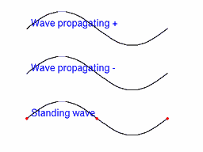
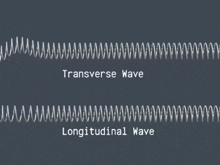
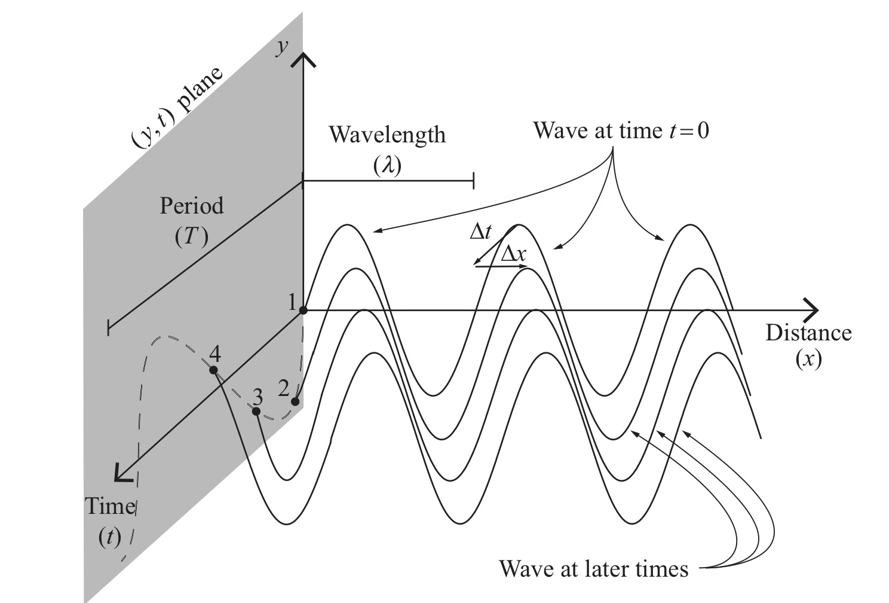
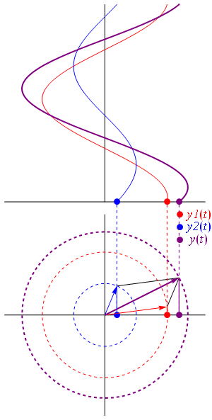
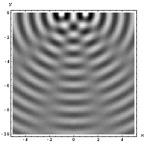

Waves
Chem 3240 · Lecture 2.1
Davit Potoyan
What is a wave?
- A wave is a self-propagating disturbance
- Transfers energy, momentum, information
- Does not transport matter
- Governed by the wave equation, a PDE
Two key families: traveling waves (propagate) and standing waves (oscillate in place)
Kinds of waves

- Medium disturbance: sound, strings, water
- Quantum waves: complex wavefunctions for electrons, atoms
- Electromagnetic waves: need no medium, travel in vacuum
- Gravitational waves: ripples in spacetime
Transverse vs longitudinal

- Transverse: disturbance is perpendicular to propagation
- Longitudinal: disturbance is along propagation
Defining a wave mathematically
- A disturbance \(u\) depends on space and time: \(u = f(x, t)\)
- A surfer riding the wave sees it frozen at \(x'\)
- A shore observer sees the front move: \(x = x' + vt\)
A right-moving wave of fixed shape:
\[u(x,t) = f(x-vt)\]
Set the front constant: \(x - vt = const \Rightarrow x = vt + const\) (moves right). The form \(f(x+vt)\) moves left.
Periodic traveling waves

A sine wave traveling along \(x\):
\[y(x,t)= A \sin(kx-\omega t+\phi)\]
- Amplitude \(A\): max disturbance
- Wave number \(k\): periodicity in space
- Angular frequency \(\omega = kv\): periodicity in time
- Phase \(\phi\): starting point
Complex representation
- Easier to compute with complex exponentials, take real or imaginary part at the end
\[u(x,t) = Ae^{i(kx-\omega t)}\]

- Real and imaginary parts are cosine and sine
- The phasor rotates as \(t\) advances at fixed \(x\)
Periodicity in space and time
- Repeats every wavelength \(\lambda\) in space: \(k\lambda = 2\pi\)
\[k=\frac{2\pi}{\lambda}\]
- Repeats every period \(T\) in time, frequency \(\nu = 1/T\): \(\omega T = 2\pi\)
\[\omega=\frac{2\pi}{T} = 2\pi\nu\]
Wavelength, frequency, and speed are linked by \(\omega = kv\), i.e. \(\lambda \nu = v\)
The classical wave equation
\[u(x,t) = Ae^{i(kx-\omega t)}\]
The classical wave equation
\[u(x,t) = Ae^{i(kx-\omega t)}\]
- Two \(x\)-derivatives: \(u_{xx} = -k^2\, u\)
- Two \(t\)-derivatives: \(u_{tt} = -\omega^2\, u\)
- Their ratio eliminates \(u\): \(\dfrac{k^2}{\omega^2} = \dfrac{1}{v^2}\)
The classical wave equation
\[u(x,t) = Ae^{i(kx-\omega t)}\]
- Two \(x\)-derivatives: \(u_{xx} = -k^2\, u\)
- Two \(t\)-derivatives: \(u_{tt} = -\omega^2\, u\)
- Their ratio eliminates \(u\): \(\dfrac{k^2}{\omega^2} = \dfrac{1}{v^2}\)
\[\frac{\partial^2 u(x,t)}{\partial x^2 } = \frac{1}{v^2}\frac{\partial^2 u(x,t)}{\partial t^2}\]
Solutions are wave functions of space and time
Combining waves: interference

- Superposition: if \(u_A\) and \(u_B\) solve the wave equation, so does \(u_C = u_A + u_B\)
- Interference: combining waves yields greater, lower, or equal amplitude
Interference of two phases

Summing two waves differing only in phase:
\[\Psi_{\text{total}} = 2 \cos\left( \frac{\phi_1 - \phi_2}{2} \right) e^{i \left( kx - \omega t + \frac{\phi_1 + \phi_2}{2} \right)}\]
- In phase (\(\phi=0\)): amplitude doubles
- Out of phase (\(\phi=\pi\)): cancels
Live: dial the phase
wave 1 \(= \sin(kx)\), wave 2 \(= \sin(kx+\phi)\), sum with envelope \(2\cos(\phi/2)\)
{
const xs = d3.range(0, 12.57, 0.03);
const series = (fn) => xs.map(x => ({x, y: fn(x)}));
return Plot.plot({
width: 1000, height: 360,
x: {label: "kx"},
y: {domain: [-2.2, 2.2], label: "u"},
marks: [
Plot.ruleY([0], {stroke: "#ccc"}),
Plot.line(series(x => Math.sin(x)), {x: "x", y: "y", stroke: "#7fb3d5", strokeWidth: 1.5}),
Plot.line(series(x => Math.sin(x + phi)), {x: "x", y: "y", stroke: "#e59866", strokeWidth: 1.5}),
Plot.line(series(x => Math.sin(x) + Math.sin(x + phi)), {x: "x", y: "y", stroke: "#C8102E", strokeWidth: 2.5})
]
});
}Takeaway
A wave is a disturbance described by \(u=f(x \pm vt)\) that obeys the classical wave equation \(u_{xx} = \frac{1}{v^2}u_{tt}\), with \(k=2\pi/\lambda\), \(\omega=2\pi\nu\), and \(\omega=kv\); superposing waves produces interference.
Chem 3240 · Quantum Mechanics